항공산업기사 (2013-03-10 기출문제)
1과목: 항공역학
1. 유체의 연속방정식에 관한 설명으로 틀린 것은?
- 압축성의 영향을 무시하면 밀도변화는 없다.
- 단면적을 통과하는 단위시간당 유체의 질량을 질량유량이라고 한다.
- 아음속의 일정한 유체흐름에서 단면적이 작아지면 유체속도는 감소한다.
- 관내 흐름이 정상흐름이면 동일관내 임의의 두 단면에서 각각의 질량유량은 동일하다.
(정답률: 78%)

2. 제트기가 최대 항속거리를 비행하기 위한 항공기의 비행상태는? (단, CL 는 양력계수, CD 는 항력계수)
- CL / CD 이 최소인 상태
- CL / CD 이 최대인 상태
- CL1·5 / CD 이 최대의 상태
- CL½ / CD 이 최대인 상태
(정답률: 68%)
3. 그림과 같은 날개의 단면에서 시위선은?
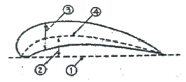
- ➀
- ➁
- ➂
- ➃
(정답률: 81%)
4. 다음 중 프로펠러의 추력을 계산하는 식으로 옳은 것은? (단, Ct 는 추력계수, ɳ 은 프로펠러 회전속도, D는프로펠러의 지름, ρ 는 공기밀도를 나타낸다.)
- Ctρɳ2D4
- Ctρɳ2D3
- Ctρɳ3D4
- Ctρɳ2D5
(정답률: 65%)
5. 항공기의 세로 안정성(Static longitudinalstability)을 좋게 하기 위한 방법으로 틀린 것은?
- 꼬리날개 면적을 크게 한다.
- 꼬리날개의 효율을 작게 한다.
- 날개를 무게 중심보다 높은 위치에 둔다.
- 무게 중심을 공기역학적 중심보다 전방에 위치시킨다.
(정답률: 86%)
6. 항공기를 오른쪽으로 선회시킬 경우 가해주어야 할 힘은? (단, 오른쪽 방향으로 양(+)으로 한다.)
- 양(+)피칭 모멘트
- 음(-)롤링 모멘트
- 제로(0)롤링 모멘트
- 양(+)롤링 모멘트
(정답률: 84%)
7. 헬리곱터에서 직교하는 세 개의 X,Y,Z축에 대한 모든 힘과 모멘트 합이 각각 0이 되는 상태를 무엇이라 하는가?
- 전진상태
- 균형상태
- 자전상태
- 회전상태
(정답률: 93%)
8. 다음 중 프로펠러 효율을 높이는 방법으로 가장 옳은 것은?
- 저속과 고속에서 모두 큰 깃각을 사용한다.
- 저속과 고속에서 모두 작은 깃각을 사용한다.
- 저속에서는 작은 깃각을 사용하고 고속에서는 큰 깃각을 사용한다.
- 저속에서는 큰 깃각을 사용하고 고속에서는 작은 깃각을 사용한다.
(정답률: 75%)
9. 비행기의 무게가 1500kgf 이고, 날개면적이 40m2, 최대 양력계수가 1.5 일 때 착륙속도는 몇 m/s 인가? (단, 공기밀도는 0.125kgf·s2/m4 이고, 착륙속도는 실속속도의 1.2배로 한다.)
- 10
- 16
- 20
- 24
(정답률: 55%)
10. 다음 중 가장 큰 조종력이 필요한 경우는?
- 비행속도가 느리고 조종면의 크기가 큰 경우
- 비행속도가 느리고 조종면의 크기가 작은 경우
- 비행속도가 빠르고 조종면의 크기가 큰 경우
- 비행속도가 빠르고 조종면의 크기가 작은 경우
(정답률: 79%)
11. 헬리곱터의 원판하중(Disk loading:DL)을 옳게 나타낸 것은? (단, W는 헬리곱터 무게, R은 주회전날개의 반지름이다.)
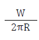
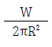
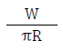
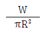
(정답률: 68%)
12. 다음 중 항공기의 상승률과 하강율에 가장 큰 영향을 주는 것은?
- 받음각
- 잉여마력
- 가로세로비
- 비행자세
(정답률: 62%)
13. 무게가 3000kgf 인 항공기가 경사각 30°, 150km/h의 속도로 정상선회를 하고 있을 때 선회반지름은 약 몇m인가?
- 218
- 307
- 436
- 604
(정답률: 71%)
14. 항공기 무게 5000kgf, 날개면적 40m2, 속도 100m/s, 밀도 1/2kgf·s2/m4, 양력계수 0.5 일 때 양력은 몇 kgf인가?
- 40000
- 45000
- 50000
- 60000
(정답률: 74%)
15. 대기의 특성 중 음속에 가장 직접적인 영향을 주는 물리적 요소는?
- 온도
- 밀도
- 기압
- 습도
(정답률: 80%)
16. 초음속 전투기는 큰 관성커플링을 일으켜 받음각과 옆 미끄럼각을 계속 증가시켜 발산하게 되는데 이를 무엇이라하는가?
- 키놀이 커플링
- 공력 커플링
- 빗놀이 커플링
- 옆놀이 커플링
(정답률: 74%)
17. 해면상 표준대기에서의 정압(Static pressure)의 값으로 틀린 것은?
- 0 kg/m2
- 2116.21695 lb/ft2
- 29.92 in·Hg
- 1013 mbar
(정답률: 87%)
18. 이륙중량이 1500kgf, 기관출력이 200hp 인 비행기가 5000m고도를 50％의 출력으로 270km/h 등속도 순항비행하고 있을 때 양향비는 얼마인가?
- 5
- 10
- 15
- 20
(정답률: 55%)
19. 날개의 항력발산(Drag divergence) 마하수를 높이기 위한 적절한 방법이 아닌 것은?
- 날개를 워시 인(Wash in) 해준다.
- 가로세로비가 작은 날개를 사용한다.
- 날개에 후퇴각(Sweep back angle)을 준다.
- 얇은 날개를 사용하여 표면에서의 속도 증가를 줄인다.
(정답률: 63%)
20. 항공기가 A 지점에서 정지상태로부터 일정한 가속도로 을 시작하여 30초 900m 떨어진 B 지점을 통과하며 이륙 했다고 할 때, 이항공기의 평균이륙속도는 몇 m/s인가?
- 50
- 60
- 70
- 90
(정답률: 69%)
2과목: 항공기관
21. 열역학에서 가역과정에 대한 설명으로 옳은 것은?
- 마찰과 같은 요인이 있어도 상관없다.
- 계와 주위가 항상 불균형 상태이어야 한다.
- 주위의 작은 변화에 의해서는 반대과정을 만들 수 없다.
- 과정이 일어난 후에도 처음과 같은 에너지양을 갖는다.
(정답률: 82%)
22. 가스터빈기관의 교류 고전압 축전기 방전 점화계통(A.Ccapacitor discharge ignition system)에서 고전압 펄스(Pulse)를 형성하는 곳은?
- 접점(Breaker)
- 정류기(Rectifier)
- 멀티로브 캠(Multilobe cam)
- 트리거 변압기(Trigger transformer)
(정답률: 78%)
23. 프로펠러 깃의 허브중심으로부터 깃끝까지의 길이가 R, 깃각이 β 일 때 이 프로펠러의 기하학적 피치는?
- 2πRtanβ
- 2πRsinβ
- 2πRcosβ
- 2πRsecβ
(정답률: 75%)
24. 왕복기관에서 발생되는 진동의 원인이 아닌 것은?
- 토크의 변동
- 오일 조절 링의 마모
- 크랭크 축의 비틀림 진동
- 왕복 관성력과 회전 관성력의 불균형
(정답률: 69%)
25. 터보제트기관에서 비추력을 증가시키기 위하여 가장 중요한 것은?
- 고회전 압축기의 개발
- 고열에 견딜수 있는 압축기의 개발
- 고열에 견딜수 있는 터빈 재료의 개발
- 고열에 견딜수 있는 배기 노즐의 개발
(정답률: 66%)
26. 9개의 실린더를 갖고 있는 성형기관(Redial engine)의 점화순서로 옳은 것은?
- 1, 2, 3, 4, 5, 6, 7, 8, 9
- 8, 6, 4, 2, 1, 3, 5, 7, 9
- 1, 3, 5, 7, 9, 2, 4, 6, 8
- 9, 4, 2, 7, 5, 6, 3, 1, 8
(정답률: 92%)
27. 가스터빈기관의 연료부품 중 연료소비율을 알려주는것은?
- 연료 매니폴드(Fuel manifold)
- 연료 오일냉각기(Fuel oil cooler)
- 연료 조절장치(Fuel control unit)
- 연료흐름 트랜스미터(Fuel flow transmitter)
(정답률: 67%)
28. 다음 중 내연기관이 아닌 것은?
- 가스터빈기관
- 디젤기관
- 증기터빈기관
- 가솔린기관
(정답률: 79%)
29. 피스톤의 지름이 16cm, 행정거리가 약 0.15m, 실린더수가 6개인 왕복기관의 총 행정체적은 약 몇 cm3 인가?
- 18095
- 19095
- 20095
- 21095
(정답률: 65%)
30. 정속 프로펠러를 장착한 항공기가 순항시 프로펠러 회전수를 2300[rpm]에 맞추고 출력을 1.2배 높이면 회전계가 지시하는 값은?
- 1800rpm
- 2300rpm
- 2700rpm
- 4600rpm
(정답률: 76%)
31. 항공기 왕복기관의 회전속도가 증가함에 따라 마그네토 1차 코일에서 발생되는 전압의 변화를 옳게 설명한 것은?
- 증가한다.
- 감소한다.
- 일정한 상태를 지속한다.
- 전압조절기 맞춤에 따라 변한다.
(정답률: 68%)
32. 가스터빈기관의 핫 섹션(Hot section)에 대한 설명으로 틀린 것은?
- 큰 열응력을 받는다.
- 가변 스테이터 베인이 붙어 있다.
- 직접 연소가스에 노출되는 부분이다.
- 재료는 니켈, 코발트 등의 내열합금이 사용된다.
(정답률: 75%)
33. 가스터빈기관에서 사용하는 합성오일은 오래 사용할수록 어두운 색깔로 변색되는데 이것은 오일속의 어떤 첨가제가 산소와 접촉되면서 나타나는 현상인가?
- 점도지수향상제
- 부식방지제
- 산화방지제
- 청정분산제
(정답률: 78%)
34. 가스터빈기관에서 배기가스의 온도 측정 시 저압터빈 입구에서 사용하는 온도 감지센서는?
- 열전대(Thermocouple)
- 써모스탯(Thermostat)
- 써미스터(Thermistor)
- 라디오미터(Radiometer)
(정답률: 62%)
35. 초기압력과 체적이 각각 P1=1000N/cm2, V1=1000cm3인 이상기체가 등온상태로 팽창하여 체적이 2000cm3이되었다면, 이 때 기체의 엔탈피 변화는 몇 J인가?
- 0
- 5
- 10
- 20
(정답률: 62%)
36. 터보제트기관과 왕복기관의 오일소비량을 옳게 나타낸것은?
- 터보제트기관 ≡ 왕복기관
- 터보제트기관 ≥ 왕복기관
- 터보제트기관 ≫ 왕복기관
- 터보제트기관 ≪ 왕복기관
(정답률: 71%)
37. 오일펌프 릴리프밸브(Oil pump relief valve)의 역할은?
- 오일냉각기를 보호한다.
- 오일계통에 오일의 압력을 증가시킨다.
- 오일계통이 막힐 경우 재순환 회로에 오일을 공급한다.
- 펌프출구의 압력이 높을 때 펌프입구로 오일을 되돌린다.
(정답률: 80%)
38. 항공기용 왕복기관의 연료계통에서 베이퍼록(Vaporlock)의 원인이 아닌 것은?
- 연료 온도 상승
- 연료의 낮은 휘발성
- 연료에 작용되는 압력의 저하
- 연료탱크 내부 슬로싱(sloshing)
(정답률: 68%)
39. 항공용 왕복기관의 플로트(float)식 기화기에 대한 설명으로 옳은 것은?
- 플로트실 유면은 니들밸브와 시트(seat)사이에 와셔(washer)를 첨가하면 유면이 상승한다.
- 플로트실 유면은 니들밸브와 시트사이에 와셔를 제거하면 유면이 하강한다.
- 주 연료노즐에서 분사양은 플로트실의 압력과 벤투리의 압력차에 따라 결정된다.
- 니들밸브와 시트사이의 와셔를 제거하면 공급연료 감소로 혼합비가 희박해진다.
(정답률: 67%)
40. 왕복기관에 사용되는 기어(Gear)식 오일펌프의 사이드클리어런스(Side clearance)가 크면 나타나는 현상은?
- 오일 압력이 높아진다.
- 오일 압력이 낮아진다.
- 과도한 오일 소모가 나타난다.
- 오일펌프에 심한 진동이 발생한다.
(정답률: 51%)
3과목: 항공기체
41. 다음 중 설계하중을 옳게 나타낸 것은?
- 종극하중 × 종극하중계수
- 한계하중 × 안전계수
- 극한하중 × 설계하중계수
- 극한하중 × 종극하중계수
(정답률: 72%)
42. 철강재료의 표면만을 경화시키는 방법으로 부적절한 것은?
- 질화(nisriding)
- 침탄(carbonizing)
- 숏피닝(shot peening)
- 아노다이징(anodizing)
(정답률: 60%)
43. 평형 방정식에 관계되는 지지점과 반력에 대한 설명으로 옳은 것은?
- 롤러 지지점은 수평 반력만 발생한다.
- 힌지 지지점은 1개의 반력이 발생한다.
- 고정 지지점은 수직 및 수평반력과 회전모멘트 등 3개의 반력이 발생한다.
- 롤러 지지점은 수직 및 수평방향으로 구속되어 2개의 반력이 발생한다.
(정답률: 77%)
44. 다음 중 황동의 주합금 원소는 구리와 무엇인가?
- 아연
- 주석
- 알루미늄
- 바나듐
(정답률: 68%)
45. 조종컬럼이나 조종간에서 힘을 케이블 장치에 전달하는데 사용되는 조종계통의 장치는?
- 풀리
- 페어리드
- 벨 크랭크
- 쿼드런트
(정답률: 50%)
46. 그림과 같이 판재를 굽히기 위해서는 Flat A의 길이는 약 몇 인치가 되어야 하는가?
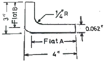
- 2.8
- 3.7
- 3.8
- 4.0
(정답률: 69%)
47. 7 × 7 케이블에 대한 설명으로 옳은 것은?
- 7개의 와이어를 모두 모아서 한번에 1개의 가닥으로 만든 케이블
- 49개의 와이어를 모두 모아서 한번에 1개의 가닥으로 만든 케이블
- 7개의 와이어를 모두 모아서 7번 꼬아 1개의 가닥으로 만든 케이블
- 7개의 와이어로 만든 가닥 1개를 7개 모아 다시 1개의 가닥으로 만든 케이블
(정답률: 80%)
48. 접개들이식 착륙장치에 대한 설명으로 틀린 것은?
- 착륙장치를 업(Up) 또는 다운(Down)시키는 비상장치를 갖추고 있다.
- 착륙장치의 다운 락크는 다운 락크 번지(Down Lock Bungee)에 의해 이루어진다.
- 착륙장치의 부주의한 접힘은 기계적인 다운 락크, 안전스위치, 그라운드 락크와 같은 안전장치에 의해 예방된다.
- 착륙장치의 상태를 나타내는 경고장치가 있고, 혼(Horn) 또는 음성 경고장치와 적색 경고등으로 구성된다.
(정답률: 63%)
49. 다음 중 날개의 주 구조인 스파의 형태가 아닌 것은?
- 단스파(Mono-spar)
- 정형재(Former)
- 박스빔(Box Beam)
- 다중스파(Multispar)
(정답률: 69%)
50. 항공기에 사용되는 페일세이프 구조의 방식만으로 나열된것은?
- 모노코크구조, 이중구조, 다경로 하중구조, 하중경감구조
- 다경로 하중구조, 이중구조, 대치구조, 하중경감구조
- 트러스구조, 이중구조, 하중경감구조, 모노코크구조
- 다경로 하중구조, 트러스구조, 하중경감구조, 모노코크구조
(정답률: 89%)
51. 금속의 늘어나는 성질을 이용하여 곡면 용기를 만드는 작업으로 성형 블록이나 모래주머니를 사용하는 가공 방법은?
- 굽힘 가공
- 절단 가공
- 플랜지 가공
- 범핑 가공
(정답률: 60%)
52. 양극 산화 처리 작업 방법 중 사용 전압이 낮고, 소모전력량이 적으며, 약품 가격이 저렴하고 폐수 처리도 비교적 쉬워 가장 경제적인 방법은?
- 수산법
- 인산법
- 황산법
- 크롬산법
(정답률: 70%)
53. 항공기의 이착륙 중이나 택시 중 랜딩기어 노스 휠(nose wheel)의 이상 진동을 막는 시미 댐퍼의 형태가 아닌 것은?
- 베인(Vane) 타입
- 피스톤(Piston) 타입
- 스프링(Spring) 타입
- 스티어 댐퍼(Steer damper) 타입
(정답률: 51%)
54. 기체 수리방법 중 크리닝 아웃(Cleaning Out)에 대한 설명으로 옳은 것은?
- 트리밍, 커팅, 파일링 작업을 말한다.
- 균열의 끝부분에 뚫는 구멍을 말한다.
- 닉크(Nick) 등 판의 작은 홀을 제거하는 작업이다.
- 날카로운 면 등이 판의 가장자리에 없도록 하는 작업이다.
(정답률: 65%)
55. 그림과 같은 V-n선도에서 실속속도(Vs)상태로 수평비행하고 있는 항공기의 하중배수(ns)는 얼마인가?
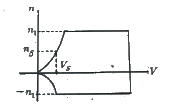
- 1
- 2
- 3
- 4
(정답률: 83%)
56. 그림과 같이 단면적 20cm2, 10cm2 로 이루어진 구조물의 a-b 구간에 작용하는 응력은 몇 kN/cm2인가?
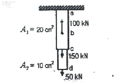
- 5
- 10
- 15
- 20
(정답률: 68%)
57. 인터널 렌칭볼트(Internal wrenching bolt)가 주로 사용되는 곳은?
- 정밀공차볼트와 같이 사용된다.
- 표준육각볼트와 같이 아무 곳에나 사용된다.
- 크레비스볼트(Clevis bolt)와 같이 사용된다.
- 비교적 큰 인장과 전단이 작용하는 부분에 사용된다.
(정답률: 72%)
58. 그림과 같은 응력변형률 선도에서 접선계수(Tangentmodulus)는? (단, 는 점 S1 에서의 접선이다.)
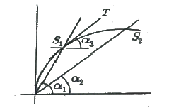
- tan α1
- tan (α1-α2)
- tan α3
- tan α2
(정답률: 68%)
59. 손상된 판재의 리벳에 의한 수리작업시 리벳수를 결정하는 식으로 옳은 것은? (단, N : 리벳의 수 L : 판재의 손상된 길이 D : 리벳지름 1.15 : 특별계수 t : 손상된 판의 두께 σmax : 판재의 최대인장응력 τmax : 판재의 최대전단응력 이다.)
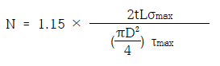
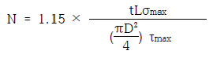
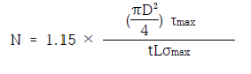
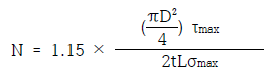
(정답률: 59%)
60. 동체의 세로방향모형을 형성하며, 길이방향으로 작용하는 휨 모멘트와 동체 축방향의 인장력과 압축력을 담당하는 구조재는?
- 외피(Skin)
- 프레임(Frame)
- 벌크헤드(Bulkhead)
- 스트링어(Stringer)와 세로대
(정답률: 71%)
4과목: 항공장비
61. 1차 감시 레이더(Rader)에 대한 설명으로 옳은 것은?
- 전파를 수신만하는 레이더이다.
- 전파를 송신만하는 레이더이다.
- 송신한 전파가 물체(항공기)에 반사되어 되돌아오는 전파를 스크린에 표시하는 방식이다.
- 송신한 전파가 물체(항공기)에 닿으면 항공기는 이 전파를 수신하여 필요한 정보를 추가한 후 다시 송신하여 스크린에 표시하는 방식이다.
(정답률: 73%)
62. 다음 중 항공기에 외부 전원을 접속할 때 켜지는 표시등이 아닌 것은?
- “AUTO” 표시등
- “AVAIL” 표시등
- “AC CONNECTED” 표시등
- “POWER NOT IN USE” 표시등
(정답률: 55%)
63. 일반적으로 항공기 특정 부분에 결빙이 되었을 때 발생하는 현상이 아닌 것은?
- 전파수신 방해
- 계기지시 방해
- 항력감소, 양력증가
- 항공기의 비행성능 저하
(정답률: 81%)
64. 배기가스온도계에 대한 설명으로 틀린 것은?
- 알루멜-크로멜 열전쌍을 사용한다.
- 제트기관의 배기가스 온도를 측정 지시하는 계기이다.
- 열전쌍의 열기전력은 두 접합점 사이의 온도차에 비례한다.
- 열전쌍은 서로 직렬로 연결되어 배기가스의 평균온도를 얻는다.
(정답률: 62%)
65. 다음 중 Ground Speed를 만들어 내는 시스템은?
- Air data system
- Yaw damper system
- Global positioning system
- Inertial navigation system
(정답률: 55%)
66. 축전지 터미널(Battery terminal)에 부식을 방지하기 위한 방법으로 가장 적합한 것은?
- 납땜을 한다.
- 증류수로 씻어낸다.
- 페인트로 엷은 막을 만들어 준다.
- 그리스(Grease)로 엷은 막을 만들어 준다.
(정답률: 83%)
67. 유압계통에서 축압기(Accumulator)의 목적은?
- 계통의 유압 누설시 차단
- 계통의 결함 발생시 유압 차단
- 계통의 과도한 압력 상승 방지
- 계통의 서지(Surge)완화 및 유압저장
(정답률: 75%)
68. 자기 컴퍼스의 오차에서 동적오차에 해당하는 것은?
- 와동오차
- 불이차
- 사분원오차
- 반원오차
(정답률: 68%)
69. 그림과 같은 브리지(Bridge)회로가 평형 되었을 때 R의 값은? (단, 저항의 단위는 모두 Ω이다.)
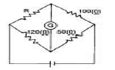
- 60
- 80
- 120
- 240
(정답률: 80%)
70. 객실의 압력을 조절하기 위한 장치는?
- Outflow Valve
- Recircuition Fan
- Pressure Relief Valve
- Negative Pressure Relief Valve
(정답률: 74%)
71. 공함에 대한 설명으로 틀린 것은?
- 승강계, 속도계에도 이용이 된다.
- 밀폐식 공함을 아네로이드라고 한다.
- 공함은 기계적 변위를 압력으로 바꾸어 주는 장치이다.
- 공함재료는 탄성한계 내에서 외력과 변위가 직선적으로 비례한다.
(정답률: 59%)
72. 다음 중 장거리 항법장치가 아닌 것은?
- INS
- 지문항법
- 오메가
- 도플러항법
(정답률: 62%)
73. 항공 교통 관제(ATC) 트랜스폰더(Transponder)에서 Mode C의 질문에 대해 항공기가 응답하는 비행고도는?
- 진고도
- 절대고도
- 기압고도
- 객실고도
(정답률: 46%)
74. 항공기에서 직류를 교류로 변환시켜 주는 장치는?
- 정류기(Rectifier)
- 인버터(Inverter)
- 컨버터(Converter)
- 변압기(Transformer)
(정답률: 83%)
75. 항공기에서 화재탐지를 위한 장치가 설치되어 있지 않는 곳은?
- 조종실내
- 화장실
- 동력장치
- 화물실
(정답률: 80%)
76. 다음 중 지향성 전파를 수신 할 수 있는 안테나는?
- Loop
- Sense
- Dipole
- Probe
(정답률: 81%)
77. 착륙 및 유도 보조장치와 가장 거리가 먼 것은?
- 마커 비컨
- 관성항법장치
- 로컬라이저
- 글라이더슬로프
(정답률: 84%)
78. 착륙장치의 경보회로에서 그림과 같이 바퀴가 완전히 올라가지도 내려가지도 않는 상태에서 스크롤레버를 줄이게되면 일어나는 현상은?
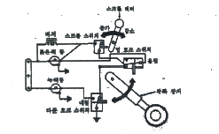
- 버저만 작동된다.
- 녹색등만 작동된다.
- 버저와 적색등이 작동된다.
- 녹색등과 적색등 모두 작동된다.
(정답률: 76%)
79. 유압계통에 과도한 압력이 걸리는 원인으로 옳은 것은?
- 여압계통이 오자동을 하기 때문
- 압력 릴리프밸브 조절이 잘못 됐기 때문
- 리저버(Reservoir)내에 작동유가 너무 많기 때문
- 사용하고 있는 작동유의 등급이 적당치 못하기 때문
(정답률: 67%)
80. 회전계 발전기(Tacho-Generator)에서 3개의 선중 2개선이 바꾸어 연결되면 지시는 어떻게 되겠는가?
- 정상지시
- 반대로 지시
- 다소 낮게 지시
- 작동하지 않는다.
(정답률: 77%)